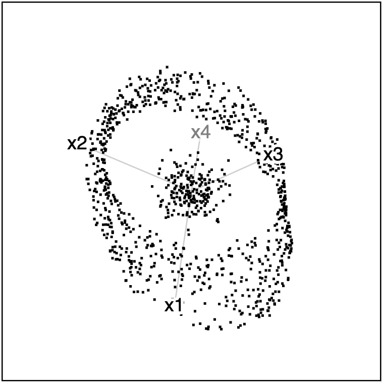
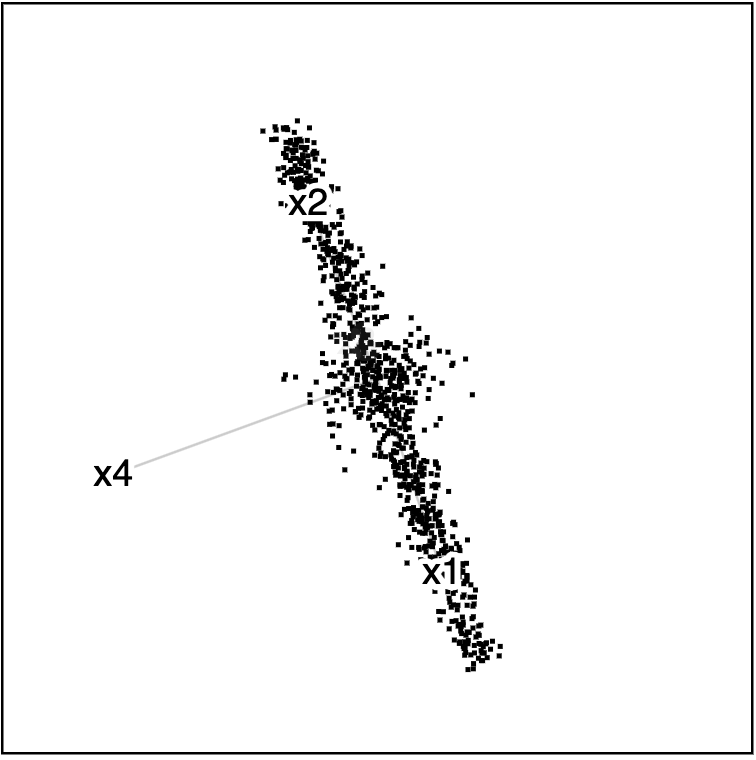

The cardinalR package provides acollection of functions to generate a large variety of structures in high dimensions.
Installation
You can install the released version of cardinalR from CRAN with:
install.packages("cardinalR") The development version from GitHub with:
# install.packages("devtools")
devtools::install_github("JayaniLakshika/cardinalR")Example
head(mobius_clust_data, 5)
#> # A tibble: 5 × 4
#> x1 x2 x3 x4
#> <dbl> <dbl> <dbl> <dbl>
#> 1 0.304 0.706 -0.152 0.0362
#> 2 0.916 0.588 0.0260 -0.0436
#> 3 0.178 1.20 0.185 0.00820
#> 4 0.740 -1.05 -0.148 -0.0462
#> 5 -0.899 0.304 -0.307 -0.0387

|
 |  |
You can find the high-dimensional view in here.
tSNE (t-distributed Stochastic Neighbor Embedding) and UMAP (Uniform Manifold Approximation and Projection) representations of mobius_clust_data are shown below.

Copyright
This package is licensed under the MIT license.